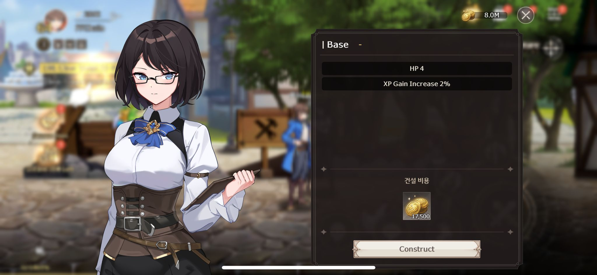
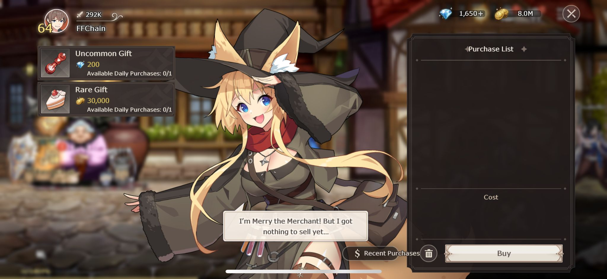
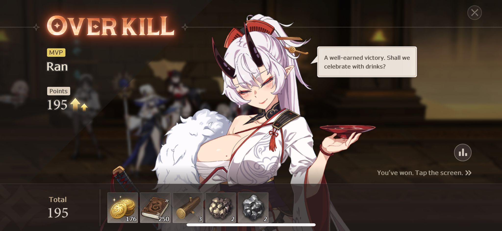

ychara
ychara
Lost Sword Village Guide FFChain
The Base upgrade can enhance the Exp Gain.
The upgrade of the base requires the consumption of gold coins and wood.
[Experience Acquired] and [Health Value] increase as the base upgrades.
The upgrade of the blacksmith shop requires the consumption of gold coins and stones.
[Attack] and [Defensive] increase as the blacksmith shop scales.

Offers [Chess] and [Cake Cuts] for purchase, daily limit 1.
Wood and stones required for the upgrade can be obtained in the labyrinth.
In the village, killing small animals can get chicken, chicken legs, and eggs.
The animal respawn after 12 hours.

When the player level exceeds 50, cooking can be done in production.
You can consume [chicken] and [gold coins] to make [stew chicken].
You can consume [eggs] and [gold coins] to make [money eggs].
[Sauté chicken] increases [attack power by 50 points], [defense by 50 points], for one hour.
Increases [hit damage by 10%] for one hour.